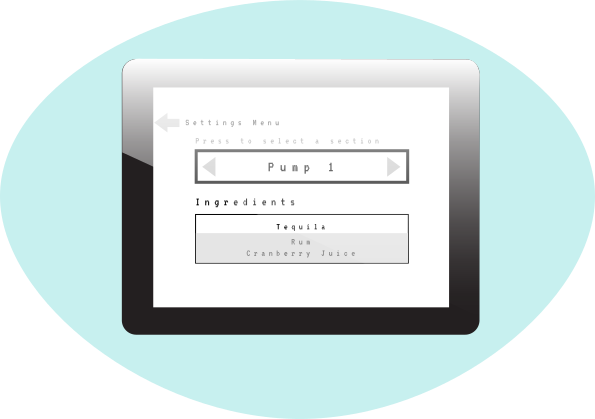
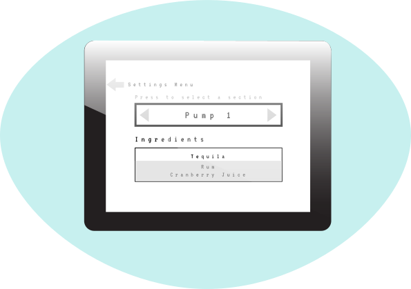

Digital Bartender
Project Overview
Digital Bartender is a project that I’m currently working on.
I was approached by a classmate to the UX and UI designs for it.
This app runs off an Arduino and is displayed on a 480x320 display.
Users will be able to input ingredients and 8 different pumps and
based off the selected ingredients the app will display the potential drinks that can be made.
Role: UX/ UI Designer
Problem
For this project, 6 unique screens needed to be created: The Home Page, Settings page, Pump Test, Add Ingredients, Drinks, and Drink in progress. The main challenge for this project were the technical limitations that it came with. In terms of UX and UI design, both the hardware and the software were limited in terms of what graphical elements could be displayed, and what controls could be used.
Project Overview
Display:
The display is a 480 x 320 resolution, 3.5-inch display.
Controls:
The control used to navigate through the page is a dial that allows users to navigate through the interface by rotating it or clicking by pressing the button.
Software:
Filled and outlined shapes that may be displayed are: Rectangles, Squares, ovals, circles, triangles.
Rectangles and Square can be rounded
BMP and RAW image file formats are the only acceptable image formations. Images can add up to a maximum of 250 kb
Transparent Images are not allowed
Text base font is 6x8 pixels. It is not transparent, however the background color may be changed
Font can be scaled by a factor of 2, this will double the length and the width
Font may not be bolded or italicized.
There is only 1 font
Approach
Since the controls were so limited, I decided to limit the functionality of each
screen to just its one basic function. This is to help both the user experience in
terms of navigation, and to make the screens less cramped and crowded.
By scrolling through with the dial, the item that is selected will have a highlighted box
around it. The dial itself will also provide tactile feedback by vibrating. To select
a section the dial can be pressed, and this will then allow the users to navigate through
the section. A second click will exit out of the section. These rules will be hold true
for each page.
Since there is only 1 font, and limited space, I decided to use 3 different font sizes
for headings, subheadings, and text
I also ensured that pictures aren't used anywhere except for the drinks page
(which displays the image of the drink) because of limited memory.
Another consideration has been to leave instructional text that helps
the user navigate the interface easier when the controls may not be as obvious.
This is currently only the first iteration of this project, so my approach and
designs will be modified as the project progresses